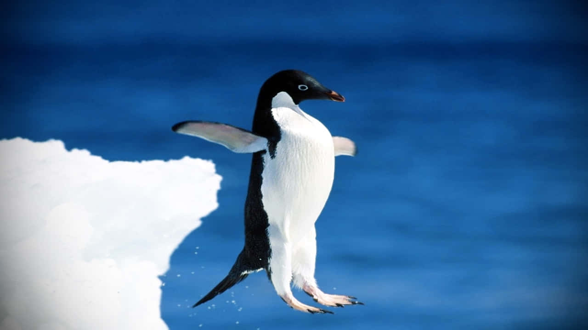

This page is all about Keira ❄️🐧
Keira is one of the most creative, funny, and genuinely kind people I know. Her favourite colour is baby blue, and she absolutely loves penguins - to the point where it's basically her whole personality (She Waddles).
See her penguinsWho is Keira?
Keira is someone who brings comfort and winter‑vibe energy wherever she goes. She loves baby blue, anything cozy, and of course: penguins. If she's not showing me yet another penguin meme, she’s probably listening to music, drawing, or talking about random topics that somehow become 3‑hour conversations.
- Favourite colour: Baby blue
- Favourite animals: Penguins
- Fun fact: She knows more penguin facts than most documentaries.
Penguins She Loves
These are placeholders - I’ll swap them with actual penguin photos Keira likes.


